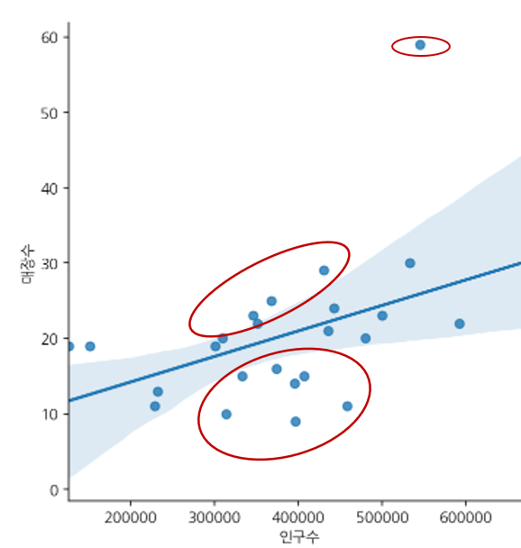
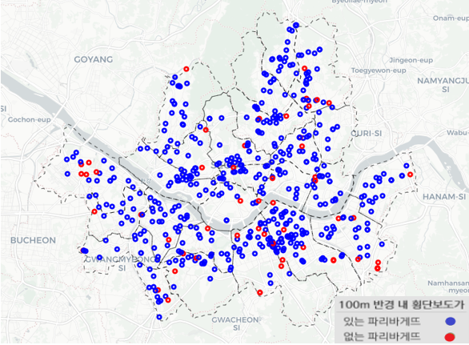
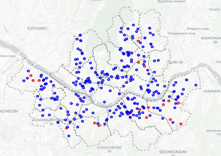
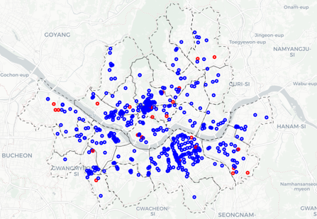
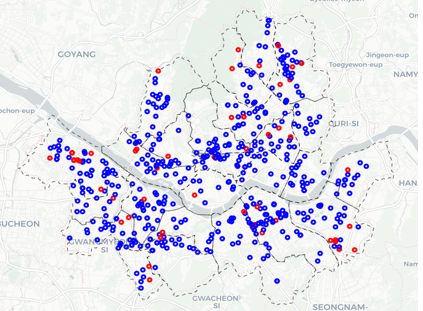

페점률 0%대 ‘상권불패‘ 파리바게뜨
입점 위치 기준은?
가설1: 거주인구가 많은 곳에 위치할 것이다.
가설1: 거주인구가 많은 곳에 위치할 것이다.

생활인구 데이터link
관련 블로그 글link
관련 기사link
횡단보도 데이터link

파리바게뜨 맵link
뚜레쥬르 100m반경 내 횡단보도
결과: 서울시에 있는 242개 뚜레쥬르 매장 중 100m반경 내 횡단보도가 있는 매장은 222개로 나왔다.뚜레쥬르 맵link
스타벅스 100m반경 내 횡단보도
결과: 서울시에 있는 485개 스타벅스 매장 중 100m반경 내 횡단보도가 있는 매장은 465개로 나왔다.스타벅스 맵link
이디야 100m반경 내 횡단보도
결과: 서울시에 있는 649개 이디야 매장 중 100m반경 내 횡단보도가 있는 매장은 600개로 나왔다. 이디야 맵 link